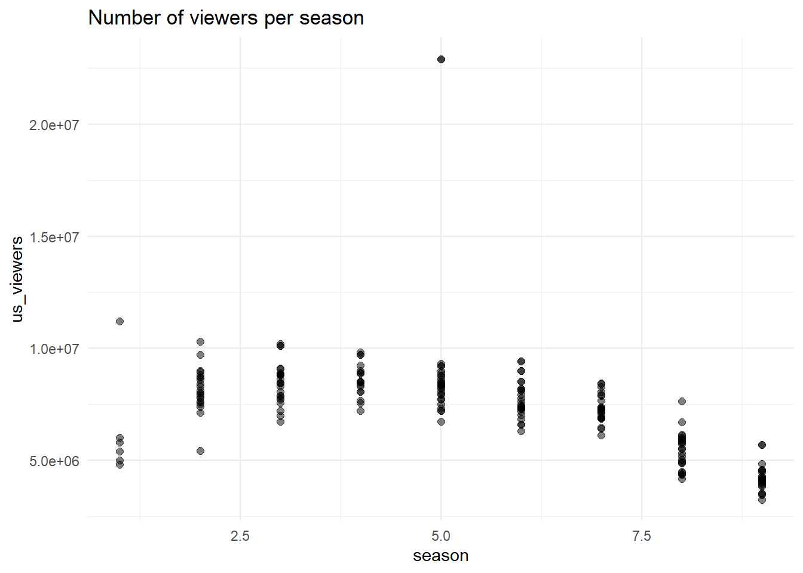

Instalowanie pakietu w 'C:/Users/X/AppData/Local/R/win-library/4.3'
(ponieważ 'lib' nie jest określony)
```{r}library(readxl)```
Warning: pakiet 'readxl' został zbudowany w wersji R 4.3.3
```{r}library(chron)```
Warning: pakiet 'chron' został zbudowany w wersji R 4.3.3
```{r}library(reticulate)```
Warning: pakiet 'reticulate' został zbudowany w wersji R 4.3.3
```{r}library(ggplot2)```
pakiet 'plyr' został pomyślnie rozpakowany oraz sumy MD5 zostały sprawdzone
Pobrane pakiety binarne są w
C:\Users\X\AppData\Local\Temp\RtmpUbYorE\downloaded_packages
pakiet 'chron' został pomyślnie rozpakowany oraz sumy MD5 zostały sprawdzone
Pobrane pakiety binarne są w
C:\Users\X\AppData\Local\Temp\RtmpUbYorE\downloaded_packages
pakiet 'reticulate' został pomyślnie rozpakowany oraz sumy MD5 zostały sprawdzone
Pobrane pakiety binarne są w
C:\Users\X\AppData\Local\Temp\RtmpUbYorE\downloaded_packages
Jest dostępna wersja binarna ale wersja ze źródłami jest późniejsza:
binary source needs_compilation
ggplot2 3.5.1 3.5.2 FALSE
pakiet 'readxl' został pomyślnie rozpakowany oraz sumy MD5 zostały sprawdzone
Pobrane pakiety binarne są w
C:\Users\X\AppData\Local\Temp\RtmpUbYorE\downloaded_packages
The Office
The Office is a British mockumentary television sitcom first broadcast in the UK on BBC Two on 9 July 2001. Created, written and directed by Ricky Gervais and Stephen Merchant, it follows the day-to-day lives of office employees in the Slough branch of the fictional Wernham Hogg paper company. Gervais also starred in the series as the central character, David Brent.
The_Office
Basic information about the series:
Number of seasons - 9
Number of episodes - 201
Air time - 2005/03/24 - 2013/05/16
Directed by:
Ricky Gervais
Stephen Merchant
List of Episodes
```{r}df <-read.csv("C:/Users/X/Downloads/RRcourse2025-main/RRcourse2025-main/7. MD and Quarto/the_office_episodes.csv")df$title```
[1] "Pilot"
[2] "Diversity Day"
[3] "Health Care"
[4] "The Alliance"
[5] "Basketball"
[6] "Hot Girl"
[7] "The Dundies"
[8] "Sexual Harassment"
[9] "Office Olympics"
[10] "The Fire"
[11] "Halloween"
[12] "The Fight"
[13] "The Client"
[14] "Performance Review"
[15] "E-Mail Surveillance"
[16] "Christmas Party"
[17] "Booze Cruise"
[18] "The Injury"
[19] "The Secret"
[20] "The Carpet"
[21] "Boys and Girls"
[22] "Valentine's Day"
[23] "Dwight's Speech"
[24] "Take Your Daughter to Work Day"
[25] "Michael's Birthday"
[26] "Drug Testing"
[27] "Conflict Resolution"
[28] "Casino Night"
[29] "Gay Witch Hunt"
[30] "The Convention"
[31] "The Coup"
[32] "Grief Counseling"
[33] "Initiation"
[34] "Diwali"
[35] "Branch Closing"
[36] "The Merger"
[37] "The Convict"
[38] "A Benihana Christmas"
[39] "A Benihana Christmas"
[40] "Back from Vacation"
[41] "Traveling Salesmen"
[42] "The Return"
[43] "Ben Franklin"
[44] "Phyllis' Wedding"
[45] "Business School"
[46] "Cocktails"
[47] "The Negotiation"
[48] "Safety Training"
[49] "Product Recall"
[50] "Women's Appreciation"
[51] "Beach Games"
[52] "The Job"
[53] "The Job"
[54] "Fun Run"
[55] "Fun Run"
[56] "Dunder Mifflin Infinity"
[57] "Dunder Mifflin Infinity"
[58] "Launch Party"
[59] "Launch Party"
[60] "Money"
[61] "Money"
[62] "Local Ad"
[63] "Branch Wars"
[64] "Survivor Man"
[65] "The Deposition"
[66] "Dinner Party"
[67] "Chair Model"
[68] "Night Out"
[69] "Did I Stutter?"
[70] "Job Fair"
[71] "Goodbye, Toby"
[72] "Goodbye, Toby"
[73] "Weight Loss"
[74] "Weight Loss"
[75] "Business Ethics"
[76] "Baby Shower"
[77] "Crime Aid"
[78] "Employee Transfer"
[79] "Customer Survey"
[80] "Business Trip"
[81] "Frame Toby"
[82] "The Surplus"
[83] "Moroccan Christmas"
[84] "The Duel"
[85] "Prince Family Paper"
[86] "Stress Relief"
[87] "Stress Relief"
[88] "Lecture Circuit: Part 1"
[89] "Lecture Circuit: Part 2"
[90] "Blood Drive"
[91] "Golden Ticket"
[92] "New Boss"
[93] "Two Weeks"
[94] "Dream Team"
[95] "Michael Scott Paper Company"
[96] "Heavy Competition"
[97] "Broke"
[98] "Casual Friday"
[99] "Cafe Disco"
[100] "Company Picnic"
[101] "Gossip"
[102] "The Meeting"
[103] "The Promotion"
[104] "Niagara: Part 1"
[105] "Niagara: Part 2"
[106] "Mafia"
[107] "The Lover"
[108] "Koi Pond"
[109] "Double Date"
[110] "Murder"
[111] "Shareholder Meeting"
[112] "Scott's Tots"
[113] "Secret Santa"
[114] "The Banker"
[115] "Sabre"
[116] "Manager and Salesman"
[117] "The Delivery: Part 1"
[118] "The Delivery: Part 2"
[119] "St. Patrick's Day"
[120] "New Leads"
[121] "Happy Hour"
[122] "Secretary's Day"
[123] "Body Language"
[124] "The Cover-Up"
[125] "The Chump"
[126] "Whistleblower"
[127] "Nepotism"
[128] "Counseling"
[129] "Andy's Play"
[130] "Sex Ed"
[131] "The Sting"
[132] "Costume Contest"
[133] "Christening"
[134] "Viewing Party"
[135] "WUPHF.com"
[136] "China"
[137] "Classy Christmas"
[138] "Classy Christmas"
[139] "Ultimatum"
[140] "The Seminar"
[141] "The Search"
[142] "PDA"
[143] "Threat Level Midnight"
[144] "Todd Packer"
[145] "Garage Sale"
[146] "Training Day"
[147] "Michael's Last Dundies"
[148] "Goodbye, Michael"
[149] "The Inner Circle"
[150] "Dwight K. Schrute, (Acting) Manager"
[151] "Search Committee"
[152] "Search Committee"
[153] "The List"
[154] "The Incentive"
[155] "Lotto"
[156] "Garden Party"
[157] "Spooked"
[158] "Doomsday"
[159] "Pam's Replacement"
[160] "Gettysburg"
[161] "Mrs. California"
[162] "Christmas Wishes"
[163] "Trivia"
[164] "Pool Party"
[165] "Jury Duty"
[166] "Special Project"
[167] "Tallahassee"
[168] "After Hours"
[169] "Test the Store"
[170] "Last Day in Florida"
[171] "Get the Girl"
[172] "Welcome Party"
[173] "Angry Andy"
[174] "Fundraiser"
[175] "Turf War"
[176] "Free Family Portrait Studio"
[177] "New Guys"
[178] "Roy's Wedding"
[179] "Andy's Ancestry"
[180] "Work Bus"
[181] "Here Comes Treble"
[182] "The Boat"
[183] "The Whale"
[184] "The Target"
[185] "Dwight Christmas"
[186] "Lice"
[187] "Suit Warehouse"
[188] "Customer Loyalty"
[189] "Junior Salesman"
[190] "Vandalism"
[191] "Couples Discount"
[192] "Moving On"
[193] "The Farm"
[194] "Promos"
[195] "Stairmageddon"
[196] "Paper Airplane"
[197] "Livin' the Dream"
[198] "A.A.R.M."
[199] "A.A.R.M."
[200] "Finale"
[201] "Finale"
Group by episode
```{r}ggplot(df, aes(x=episode_num_overall, y=us_viewers)) +geom_point(alpha =0.5, size =2) +scale_color_viridis_c() +theme_minimal() +ggtitle('Number of viewers per episode over time')```
Group by season
```{r}ggplot(df, aes(x=season, y=us_viewers)) +geom_point(alpha =0.5, size =2) +scale_color_viridis_c() +theme_minimal() +ggtitle('Number of viewers per season')```

Final description
The show was very popular in the U.S. Throughout its runtime the office gathered maximum of 12 mln viewers on first season. It also managed to maintain high viewership count over time.